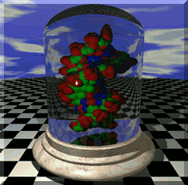
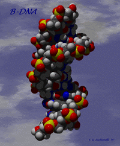
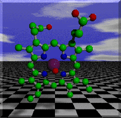
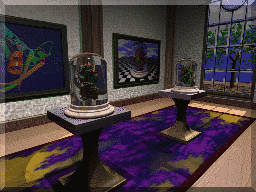
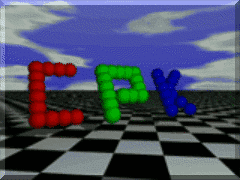

Ray-Tracing Galleria
Here are a number of images and animations created with the POV-Ray ray-tracer. The molecular models were created by using my PDB to POV-Ray conversion program pdb2pov.
If you like molecular ray-tracing you might want to have a look at two programs I have written to ease the task of converting molecular format data to POV-Ray 3.0 format. These programs are: pdb2pov and molview.
|  | DNA Under Glass: This image represents a piece of DNA under a crystal bell jar. The DNA coordinates are real, and were found at the Brookhaven Protein Databank. The image is POV-Ray hall of fame winner, and has been featured on the POV-Ray homepage as well as the BioMedNet e-zine the H.M.S. Beagle |
|  | B-DNA: This image represents the B-DNA dodecomer in the bell jar shown above. The structure was solved by Holbrook et al. |
|  | Heme Group: This image represents one of the heme groups from the protein hemoglobin. This is a porphyrin ring; the large purple atom in the center is an Iron atom, and the red atom in front of it is the bound Oxygen atom. The principal reason carbon monoxide is so toxic is because it binds irreversibly to this Iron atom, keeping the molecule from transporting oxygen in the normal fashion. |
|  | The Gallery: This image utilizes a variety of objects found on the POV-Ray CD-ROM. The bell-jar image on the left is Z-DNA, while the one on the right is B-DNA. The protein molecule shown in the left-most picture is H-Ras rendered with the program Molscript. |
|  | The now famous CPK logo. |
Eric G. Suchanek <suchanek@pg.com>
{kind=link}
{kind=link}
{kind=link}
{kind=link}
{kind=link}